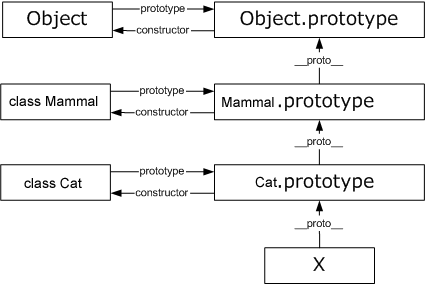

面向对象的英文全称叫做Object Oriented，简称OO。OO其实包括OOA(Object Oriented Analysis，面向对象分析)、OOD(Object Oriented Design，面向对象设计)和OOP(Object Oriented Programming，面向对象的程序设计)。
通常所说的面向对象是指OOP, OOP是一种围绕真实世界的概念来组织模型的程序设计方法，它 采用对象来描述问题空间的实体。在使用计算机解决问题时，对象是作为计算机模拟真实世界 的一个抽象，一个对象就是一个物理实体或逻辑实体，它反映了系统为之保存信息和（或）与 它交互的能力。使其具有自己的属性和行为, 从而简化对复杂事物的描述，更有利于工程的可 维护性和扩展性。
OOP同结构化程序设计相比最大的区别就在于: 前者首先关心的是所要处理的数据，而后者首先 关心的是功能。
javascript 本身是一种基于对象(object-based)的语言，我们日常编码过程中用到的所有东西几 乎都是对象(Number,String,Boolean, etc,.)。但是，相对于一些流行的面向对象语言 (C++,C#,java)，它又不是一种真正的面向对象编程(OOP)语言，因为它的语法中没有class的概念。
Keyword: class, object, this, closure, constructor, prototype
假定我们把猫看成一个对象，它有"name"和"color"两个属性, "etc" 行为。
var Cat = {
name: ''
color: '',
eat: function() {}
};
现在，我们需要根据这个原型对象的规格（schema），生成两个实例对象。
function eat() {
console.log('I\'m eta fish');
}
var cat1 = {name: 'Kitty', color: 'white', eat: eat};
var cat1 = {name: 'Smokey', color: 'black', eat: eat};
// var cat2, cat3 ,...
不方便创建多个实例对象，扩展性差, 实例(cat1, cat2)之间找不到联系。...
"构造函数"，就是一个普通函数，但是内部使用了 this 变量。对函数使用
new 运算符，就能生成实例，并且 this 变量会绑定在实例对象上。
使用构造器创建出来的对象会有一个 constructor 属性，指向它们的构造函数。
Class 只是一个模板，创建出来的来实例都是由模板生成。
比如，猫的原型对象现在可以这样写:
function Cat(name,color){
this.name = name;
this.color = color;
this.eat = function() { console.log('eat fish'); };
}
var cat1 = new Cat('Kitty', 'black');
console.log(cat1.name); // Kitty
console.log(cat1 instanceof Cat); // TRUE
// 这时 cat1 实例会自动含有一个 `constructor` 属性，指向它们的构造函数 `Cat`。
var cat2 = Cat('Smokey', 'white');
console.log(cat2); // undefined
prototype 是 Function 对象的一个属性，这个属性指向另一个对象。 这个对象的所有属性和方法，都会被构造函数的实例继承。
同时 prototype 又存在一个指向构造函数的引用 constructor，这样就成功的构成一个循环引用的原型链结构。
我们可以把那些不变的属性和方法，直接定义在 prototype 对象上, 节省内存开销。
function Cat(name, color) {
this.name = name;
this.color = color;
}
Cat.prototype.type = 'mammal';
Cat.prototype.eat = function() { console.log('eat fish'); };
var cat1 = new Cat('Kitty', 'white');
var cat2 = new Cat('Smokey', 'black');
console.log(cat1.type); // mammal
console.log(cat1.eta === cat2.eta); // TRUE, same reference
console.log(cat1.constructor === Cat) // TRUE, from Person.prototype
继承 (Inheritance)
将持有共性特点的属性或行为抽象出一个基本类, 可以按不同层次结构的业务分组抽象出多个基础类。
Cat, Bird
使用call或apply方法，将父对象的构造函数绑定在子对象上。
function Animal() {
this.species = 'animal';
this.sleep = function() { console.log('I\'m sleep at night'); };
}
function Cat(name, color) {
this.name = name;
this.color = color;
}
让`Cat` 继承 `Animal` 的特性:
/** @class Cat */
function Cat(name, color) {
Animal.apply(this);
this.name = name;
this.color = color;
}
var cat1 = new Cat('Kitty', 'white');
cat1.sleep(); // I am sleep at night
如果"猫"的prototype对象，指向一个Animal的实例，那么所有"猫"的实例，就能继承Animal了。
/** @class Cat */
function Cat(name, color) {
this.name = name;
this.color = color;
}
Cat.prototype = new Animal;
Cat.prototype.eta = function() { console.log('fish is my delicious'); };
它相当于完全删除了prototype 对象原先的值，然后赋予一个新值
// 任何一个prototype对象都有一个constructor属性，指向它的构造函数 Cat.prototype.constructor = Cat; // fix prototype chains
var cat = new Cat('Kitty', 'fish');
cat.eat(); // fish is my delicious
cat.sleep(); // I'm sleep at night'
console.log(cat instanceof Cat); // TRUE
console.log(cat instanceof Animal); // TRUE
需要创建父类实列来实现 `prototype` 继承
继承 (Inheritance) - 利用空对象作为中介实现原型继承
var F = function() {};
F.prototype = Animal.prototype;
Cat.prototype = new F();
Cat.prototype.constructor = Cat;
我们将上面的方法，封装成一个函数，便于使用。
function extend(ctor, superctor, px) {
if (!superctor || !ctor) throw Error('extend failed, verify dependencies');
var F = function() {};
F.prototype = superctor.prototype;
ctor.prototype = new F();
ctor.prototype.constructor = ctor;
ctor.superclass = superctor.prototype; // cache super class proto reference.
if (px) { // extend class implements
for (var k in px) {
if (px.hasOwnProperty(k)) ctor.prototype[k] = px[k];
}
}
return ctor;
}
/** @class Mammal */
extend(Cat, Animal, {
eat: function() {
Cat.superclass.eat.call(this); // call super method
console.log('Also i like some ofther food, such as beef and more.');
}
});
var cat = new Cat('Smokey', 'fish');
cat.sleep();
cat.eat();
console.log(cat instanceof Animal);
console.log(cat instanceof Cat);
/** @class Cat */
extend(Cat, Animal, {
eat: function() {
Cat.superclass.eat.call(this); // call super method
console.log('Also i like some ofther food, such as beef and more.');
}
});
多态 (Polymorphism) - 原型继承 prototype 链上的方法、属性查找

Constructor Prototype Inheritance
Thanks